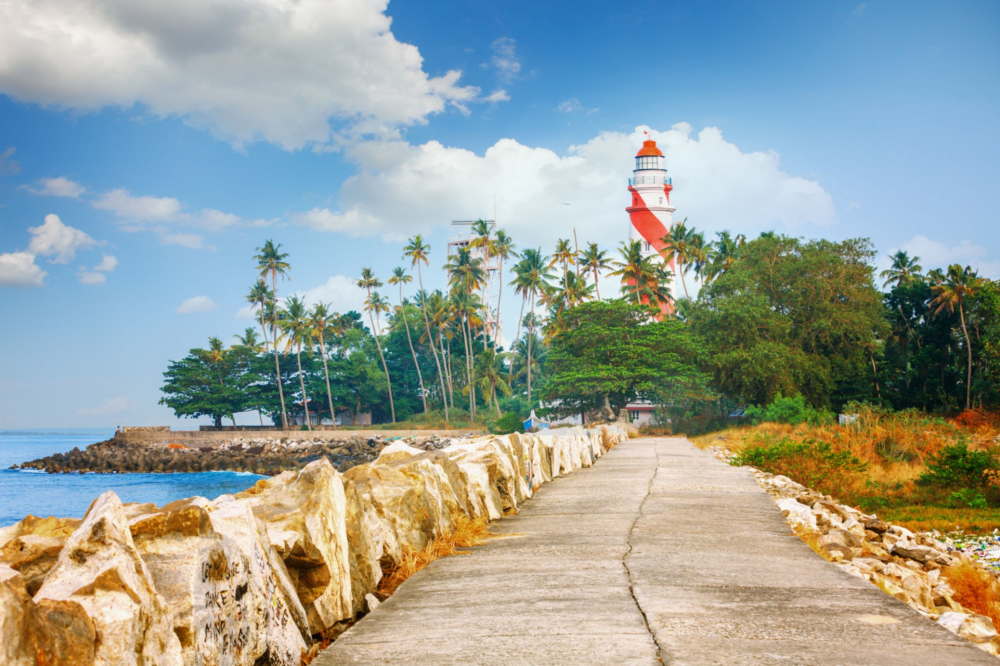

KOLLAM
Kollam is a beautiful place in South India, which fascinates you with its multitude of tourist attractions. Such was the fame of Kollam once as a trade center that everyone from the Romans, Arabs, Chinese, the Portuguese, Dutch, and British traders were clamoring to get their hands on the spices and the cashew crops of the region. Have a look at some of the best Kollam tourist places for a surreal vacation in Kerala, truly God’s Own Country.

Jatayu’s Earth Centre
Spread across 65 acres of land, Jatayu Earth's Centre is a rock-themed park built to promote mythology and adventure. The world’s largest bird sculpture is the main attraction at Jatayupara Nature Park and is one among the several Kollam famous places

Thangassery Lighthouse
Looking for the best tourist places in Kollam? The Thangassery Lighthouse, also known as the Tangasseri Light House, boasts of being the second tallest on the entire coast of Kerala and is thus even one of the most visited lighthouses in the state on this account.

Palaruvi Falls
Palaruvi Waterfalls, which literally translates to ‘Stream of Milk’. The white-stream waterfall descending from the height of 300ft resembles the shape of a horse’s tail. An ideal time to visit this place is from June to January. It is the 32nd highest waterfall in India, also known to have Ayurvedic properties

Sasthamkotta Lake
Sasthamkotta Lake is the largest of its kind in Kerala and said to have derived its name from an ancient Sastha Temple located near the lake. It is surrounded by hills on the 3 sides and is the largest source of drinking water for the residents of Kollam.
Kollam Beach
Voted as the first 'Beach Wedding Destination' in Kerala, the Kollam Beach requires no introduction. There are a lot of places to visit in Kollam, but this beach is one of the most scenic and beautiful